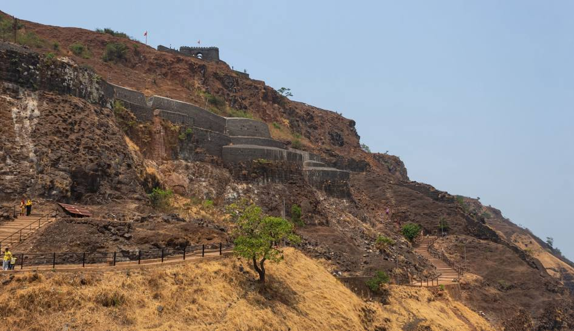

Mahalaxmi Temple Ambabai Mandir)is an important Hindu Temple. First Shaktipeeth in 108 and 51 Shakteepith of World. |

Panhala Fort is located in Panhala, 20 kilometres northwest of Kolhapur in Maharashtra,India. spent her formative years. It is also called as the 'Fort of Snakes' as it is zigzagged in shape |

Vishalgad age-old ancient fort known as Vishalgad Fort which is a popular seat of tourism in the area |

Jyotiba Temple site of Hinduism near Wadi Ratnagiri in Kolhapur annual fair takes place on the full moon night of the Hindu months of Chaitra and Vaishakha. |

Rankala lake temple it is a popular evening spot and recreation centre.The Lake is surrounded by Chaupati&other gardens. |

New Palace from 1877 to 1884,costing about seven lakhs of rupees Being an excellent specimen of Indian architecture built in black polished stone, it has been an attraction for tourists. |